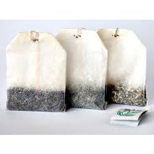
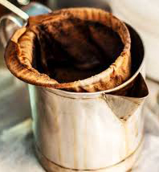

<!--
  Generated template for the DrinksPage page.

  See http://ionicframework.com/docs/components/#navigation for more info on
  Ionic pages and navigation.
-->
<ion-header>

  <ion-navbar>
    <ion-title>Drinks</ion-title>
  </ion-navbar>

</ion-header>


<ion-content padding>

  <ion-grid>
    <ion-row wrap>
      <ion-col>
        
        <button ion-button full>Teh | Tay <br>Tea</button>
      </ion-col>
      <ion-col>
          
          <button ion-button full>Kopi | Ko.pee <br>Coffee</button>
        </ion-col>
    </ion-row>
  </ion-grid>

</ion-content>
